처음에는 예제를 고르고 조건을 바꿔 실행할 수 있습니다. 백테스트는 가상 체결이며 실제 주문을 내지 않습니다. 이 문서는 현재 로컬 소스의 화면과 자동화 시험을 바탕으로 기능과 확인 범위를 함께 설명합니다.
저장 전략이 없으면 예제를 고르거나 새 전략을 만들 수 있습니다. 저장된 전략, 과거 실행, 시세 데이터는 이 PC의 로컬 저장소를 기준으로 표시됩니다. 비어 있는 목록을 실제 연결이나 시세 보유로 오해하지 않도록 상태를 나눠 보여줍니다.
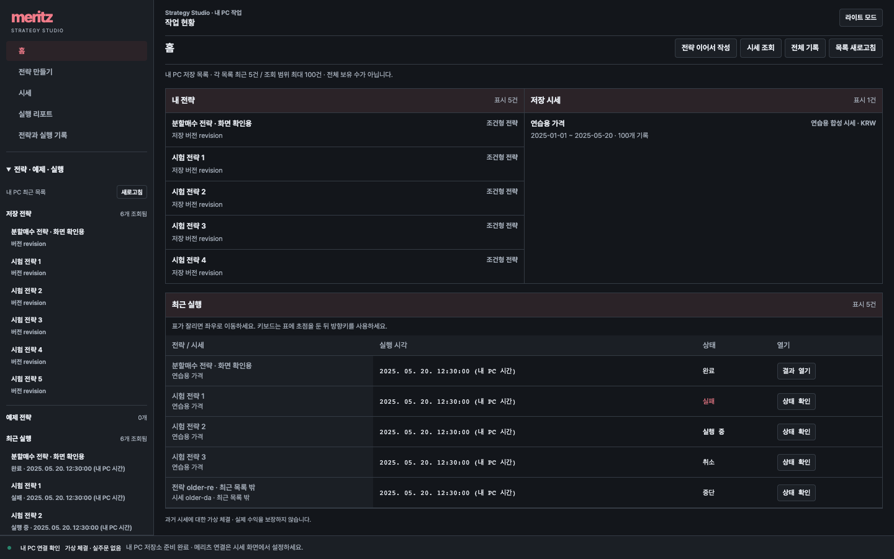
예제 전략 35종이 준비되어 있습니다. 초보자는 전략 이름과 설명을 읽고 선택한 뒤, 기간·수량·매수·매도 규칙을 확인합니다.
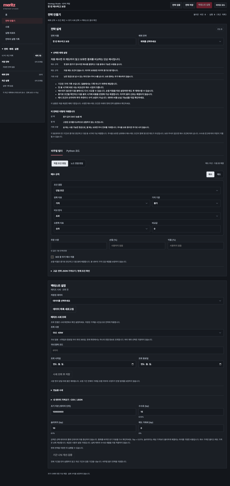
매수와 매도 조건을 각각 설정하고 조건을 AND/OR로 묶습니다. 조건이 완성되지 않았거나 지원하지 않는 지표가 있으면 저장·검증·실행 전에 안내합니다. 화면의 설명은 현재 편집된 규칙을 따라갱신됩니다.
Python은 추가 선택지입니다. 일반 사용자는 예제와 비주얼 빌더로 전략을 만들 수 있어 Python을 실행할 필요가 없습니다. 사용자 Python 코드는 격리 실행 범위와 운영체제 제한이 적용됩니다.
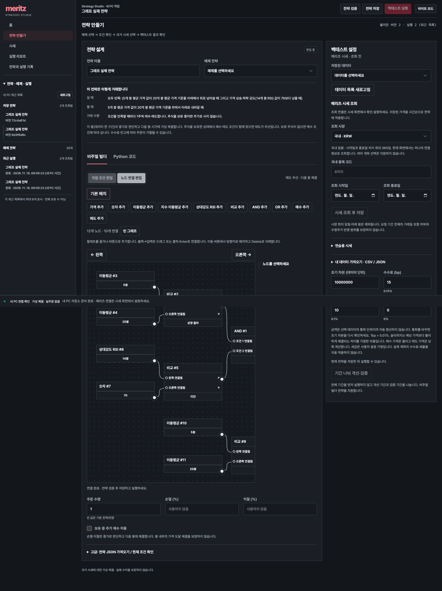
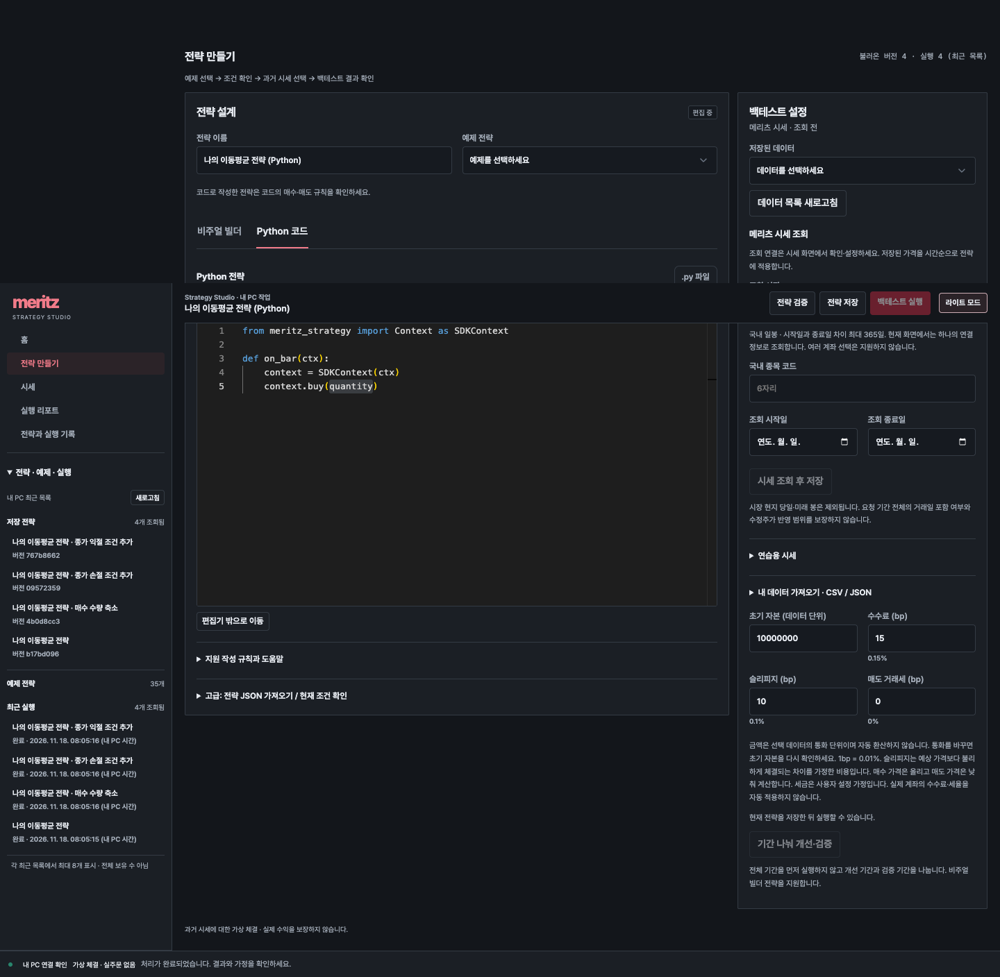
이 입력 화면은 제품 기능입니다. AppKey와 AppSecret은 화면에서 가려 입력하며, 연결 정보 설정을 누르면 현재 앱 실행 중에만 사용하도록 로컬 Runtime 메모리에 전달합니다. 앱 프로세스를 종료하면 다시 입력해야 합니다. 전략·시세 저장 파일에는 키를 기록하지 않습니다.
이 문서의 화면은 빈 입력 폼입니다. 테스트 키 값은 저장·캡처하지 않았습니다. 이 자동화는 키 설정 UI와 로컬 세션 동작을 확인하지만, 실제 고객 키의 인증 성공을 의미하지 않습니다.
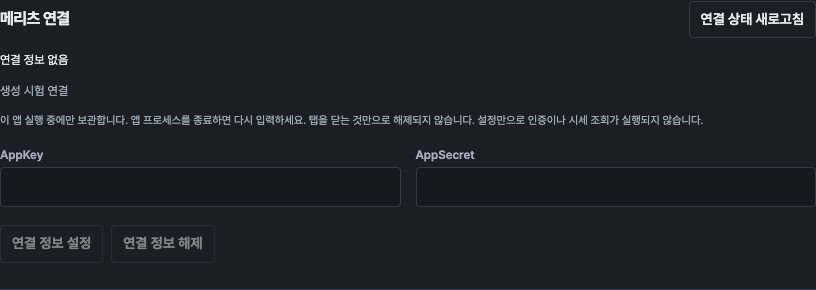
시세 조회 화면에서 국내·미국 시장, 종목, 조회 기간을 지정합니다. 성공하면 과거 가격을 로컬 데이터로 저장해 전략에 연결합니다. CSV/JSON 가격 데이터 가져오기도 제공하며, 예제로 연습할 때는 생성된 합성 시세를 별도로 선택합니다.
수정주가·기업행동 반영 범위와 조회 가능 기간은 데이터 출처와 API 응답을 확인해야 합니다. 백테스트 시작 전 화면의 출처·기간·봉 수·통화를 확인하세요.
여기서 실제 고객 키로 조회를 완료했다는 증거는 아직 없습니다. 이 흐름의 버튼과 로컬 저장 경로는 자동화로 확인한 상태입니다.
전략을 저장하고 과거 시세, 기간, 초기 자본, 수수료·세금·슬리피지 설정을 확인한 뒤 실행합니다. 조건은 봉의 종가를 기준으로 판단하고 다음 봉 시가에 비용을 반영해 가상 체결합니다. 이 과정에서 실제 주문 API를 호출하지 않습니다.
기간이 짧거나 거래가 적으면 CAGR·Sharpe·승률 등 일부 지표를 계산할 자료가 부족해 표시하지 않을 수 있습니다.
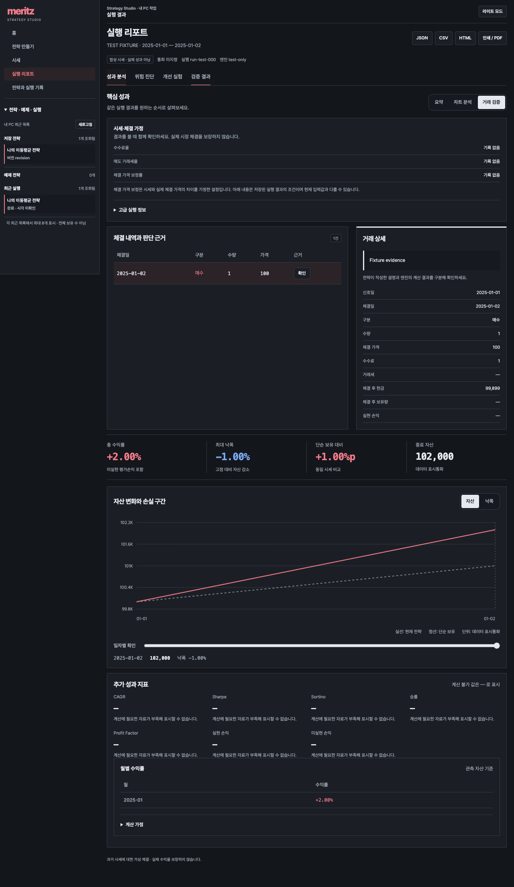
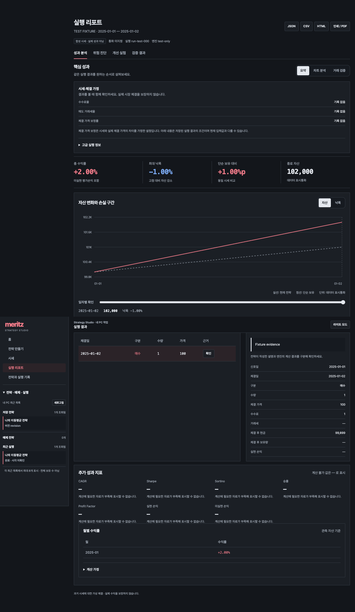
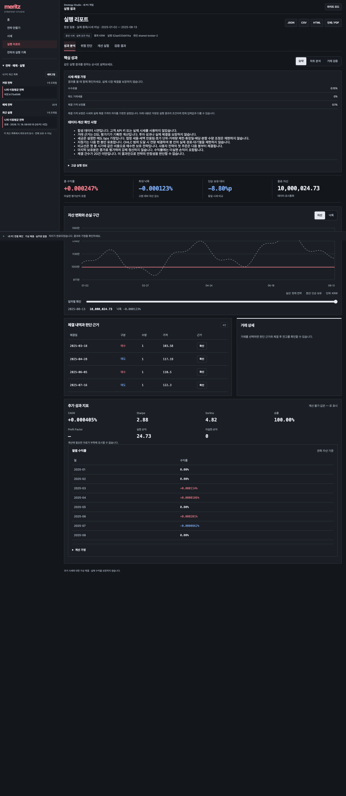
위험 진단은 계산된 실행 결과를 바탕으로 손익·낙폭·거래 집중과 같은 특징을 보여줍니다. 개선 실험은 원본 전략을 유지하면서 후보 조건을 만들고 같은 데이터 조건으로 재실행합니다.
자동 생성된 후보가 수익을 높이거나 손실을 줄인다는 보장은 없습니다. 결과를 투자 권유로 해석하지 마세요.
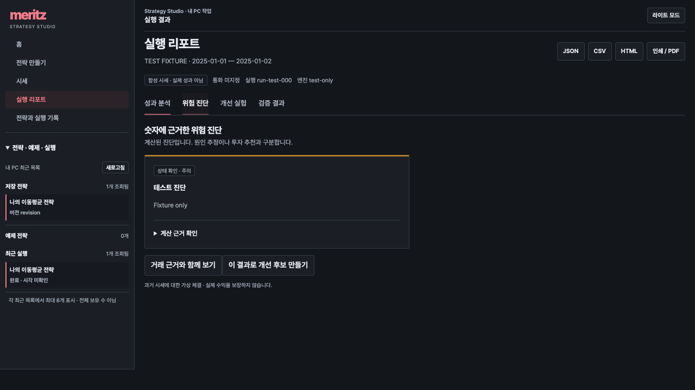
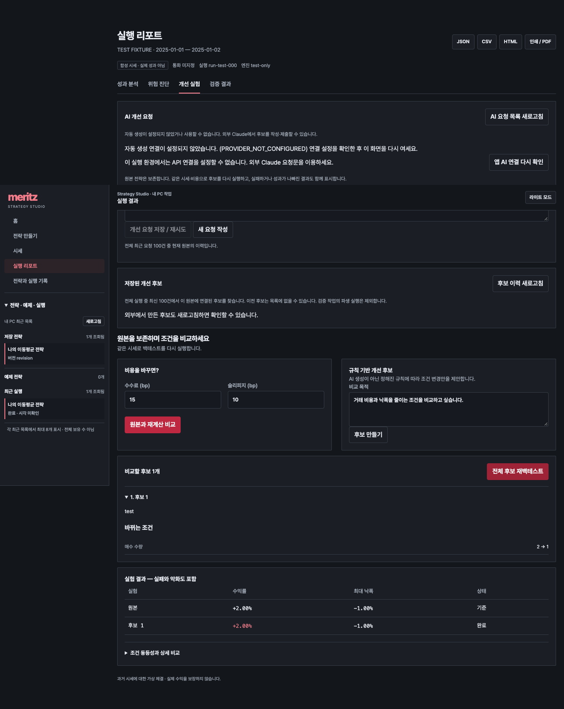
Walk-forward는 과거 구간을 나눠 후보를 고르고 다음 구간에서 다시 계산하는 연구 도구입니다. 파라미터 표는 정해진 범위의 조합을 실행해 결과를 비교합니다. 실행 전에 비교 조건과 봉 수를 확인하세요.
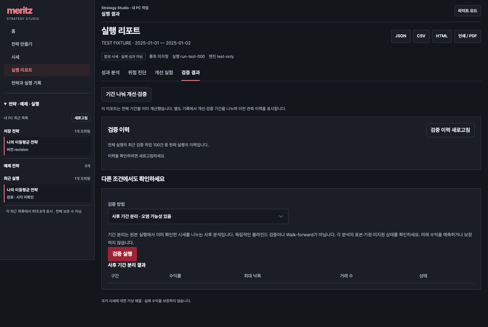
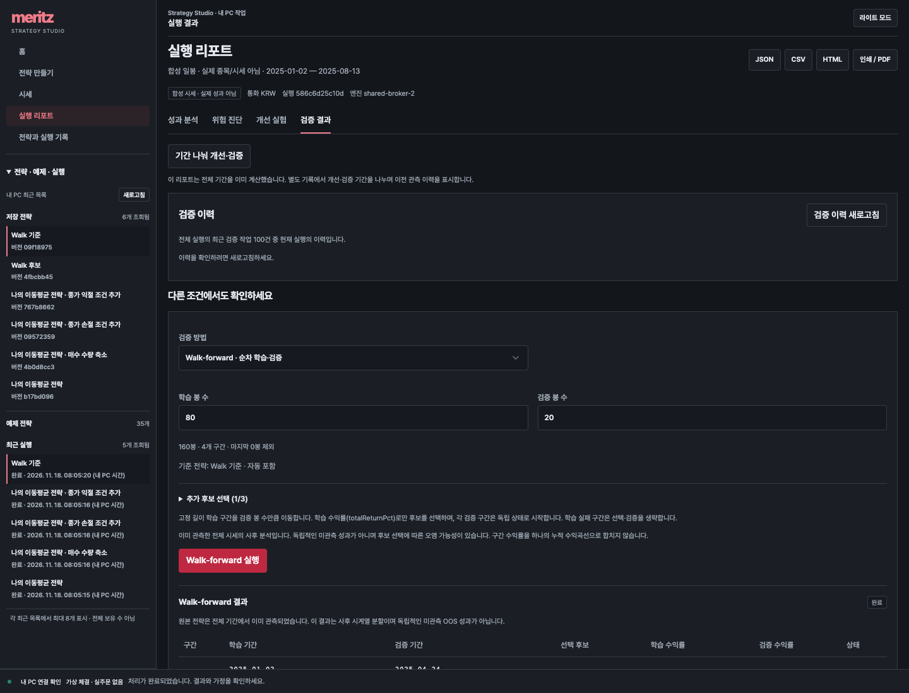
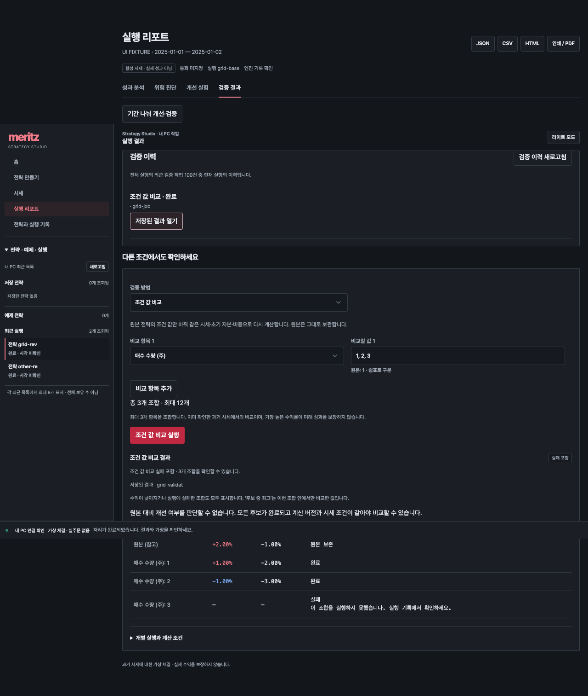
사용자는 Claude에서 메리츠 Open API MCP를 이용해 실제 메리츠 시세를 조회하고, 전략 조건과 기간을 지정해 분석을 요청할 수 있습니다. 아래 결과는 사용자가 제공한 Claude 화면으로, 삼성전자(005930) 최근 1년 일봉 243개를 바탕으로 SMA 5/20 교차 전략을 다시 계산한 사례입니다.
이 결과는 해당 요청의 시세·기간·전략 설정에 대한 사례이며, 다른 전략이나 기간의 결과를 보장하지 않습니다. 실제 주문은 실행하지 않았습니다.
위 Claude 결과는 기존 Claude용 Open API MCP를 활용한 사례입니다. 아래 Studio 화면 캡처 중 자동화 시험 결과로 표시된 리포트는 합성 시세·시험 응답입니다. 기존 MCP의 실제 시세 활용 가능성과 Studio GUI의 고객 키 직접 연결 검증은 별개입니다.
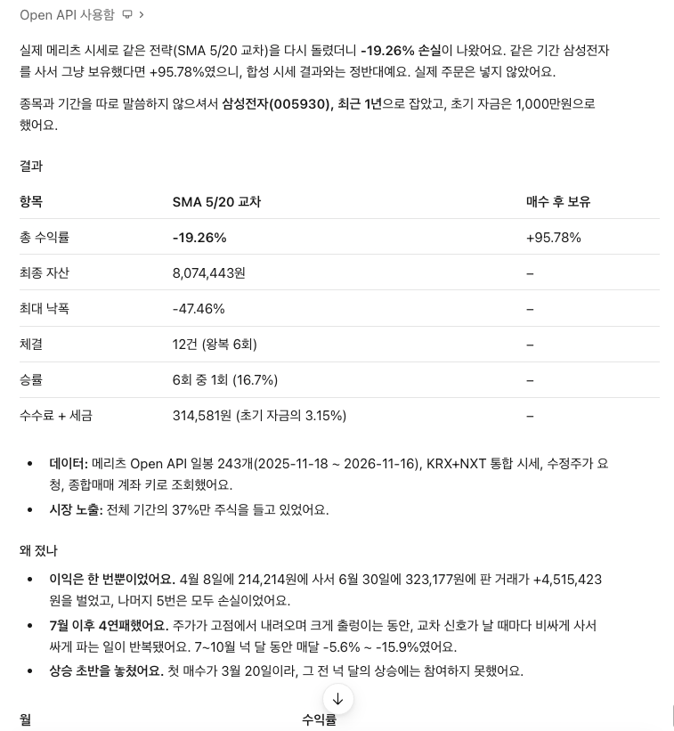
| 영역 | 출시 목표 |
|---|---|
| 설치와 실행 | Windows·macOS 통합 설치본에서 Studio, 백테스트 Runtime, MCP를 제공합니다. Docker·Python·Node.js를 따로 설치하지 않고 시작할 수 있게 합니다. |
| 전략 만들기 | 비개발자는 다양한 예제와 비주얼 조건 편집으로 시작합니다. 코드는 선택 기능으로 두고, Python은 지원 운영체제에서 격리·자원 제한을 검증한 뒤 제공합니다. |
| 시세 사용 | 고객 본인의 메리츠 Open API 권한으로 국내·미국 일봉 시세를 조회하고 출처·종목·기간·봉 수를 결과에 표시합니다. 가져온 OHLC 파일도 사용할 수 있습니다. |
| 백테스트 | 계산은 고객 PC에서 수행합니다. Studio·MCP·CLI가 같은 Runtime을 사용하고, 백테스트 실행 경로에서는 주문 API를 호출하지 않습니다. |
| 분석 리포트 | 한투 공개 백테스터가 안내하는 20개 이상 성과지표 수준을 목표로 지표 정의와 계산을 제공합니다. 자산·낙폭 차트, 벤치마크 비교, 월별 성과, 거래내역과 비용을 포함하고 HTML·PDF·JSON·CSV로 저장합니다. |
| 전략 진단·개선 | 거래별 판단 근거와 손실 요인을 설명합니다. What-if·파라미터 비교·Walk-forward·기간 분리 검증을 제공하고, Claude 개선 후보는 같은 Runtime으로 재실행해 원본과 비교합니다. |
| 주문 연계 | 검증된 전략 신호를 기존 메리츠 Trading MCP의 별도 주문 검토 흐름으로 넘길 수 있게 합니다. 백테스트 엔진은 주문하지 않으며, 실제 주문은 주문 내용 확인과 사용자의 명시적 확인을 거치는 별도 경로에서 처리합니다. 모의투자 지원은 API 계정·도메인 확인 후 범위를 확정합니다. |
| Claude MCP | Claude 대화에서 전략 작성·검증·백테스트·결과 설명·개선 후보 비교를 요청합니다. AI 설명과 제안은 계산된 결과에 근거하고 엔진 재실행 결과를 함께 보여줍니다. |
| 데이터와 키 보호 | 전략·시세·결과는 기본적으로 고객 PC에 저장합니다. API 키와 토큰을 전략 코드·리포트에 노출하지 않고, 지원하지 않는 실행 환경은 안전하게 차단합니다. |